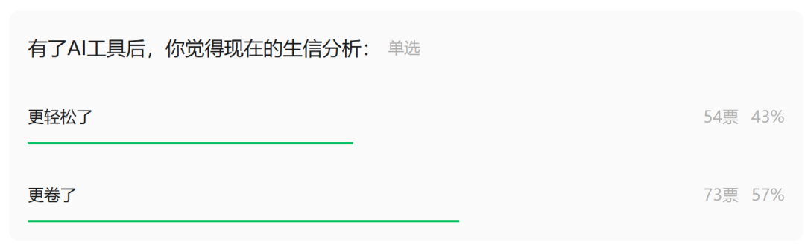

未来有没有可能不需要学代码，服务器+编程式AI就可以完成你的所有生信幻想
原文：https://mp.weixin.qq.com/s?__biz=MzAwMzIzOTk5OQ==&mid=2247538705&idx=1&sn=64ddf203a04ce7dbf86949fd114a38d7&chksm=9b3c2141ac4ba857214ba04d081dacc4debc99f5a98c0bd00957c4b2b80cedc0a311024546fb#rd 合集：AI时代，不用就会被淘汰
一、新时代、新问题

之前做过一个调研(iTALK劝你去冲咖啡)，大部分粉丝认为，有了AI之后，生信分析变得更卷了。从Claude Code自主debug独立完成单细胞数据分析，到OpenClaw远程调度服务器批量运行单细胞流水线，这些与原来靠语言大模型对话Ctrl C+ V不同，现在大模型代码代理直接就能接入服务器，在分析的一线踏平生信领域的编程门槛。现在最大的问题已经浮出水面：未来是否彻底不需要学习R与Python，仅凭服务器算力与AI代码工具，就能零代码完成全部生信数据分析？
可能未来比代码编写技能更重要的是tocken的数量与算力是否跟得上，服务器详细介绍见入手足够完成硕博生涯的生信环境、独享用户连技术支持都是独享的、RTX5090、4080S、5070显卡上机。随时滴滴微信号[Biomamba_zhushou]咨询获取教程,也欢迎注册试用：https://biomamba.xiyoucloud.net/
二、你怎么看？
对于90%的、有明确需求的生信分析，零代码AI自主分析已然具备落地可行性。传统生信80%的工作量，集中在重复性机械编码：空间转录组去卷积、单细胞去批次、基因富集等。这类流程有着固定的pipeline、公开的报错解决方案，是当前代码类大模型最擅长的领域。依托本地GPU服务器、远程集群算力，搭配OpenClaw远程调度、Claude Code自主调试、Codex代码生成三位一体的AI体系，使用者只需描述要求，AI即可自主完成环境校验、函数替换、代码迭代、服务器任务提交、报错回溯全流程。就像我们做过的很多报错答疑，人工需要数小时、甚至数天查阅文档适配语法，而代码AI可以在分钟级完成底层源码适配，无需使用者掌握任何语法逻辑。在标准化场景下，编码能力已经从生信必备技能，降级为AI的内部执行逻辑，使用者只需要理解生物学目的，无需关注代码实现细节。
但即便AI算力与代码能力无限进化，生信永远无法实现百分百纯无代码。至少AI无法凭空构建分析逻辑，它需要倾听人类的分析需求。服务器安全(OpenClaw可能遇到的安全风险)与算力风控也需要人为的接入：AI可以调度服务器，但无法自主判断算力过载、测序原始数据污染、文件权限泄露、中间结果失真等底层硬件与数据隐患，一旦AI盲目提交高并发任务，极易造成服务器宕机、原始数据损毁。
所以，答案并非二极管：代替工人的不是机器，而是会操作机器的工人，原来古法手作的生信工作将逐渐失去竞争力，但前沿、非标、容错性要求极高的深度分析，永远无法脱离人的底层认知、经验。AI工具仍然需要与工程师进行交互，无代码只是工具形态的迭代，替代生信工作者的也不是AI，而是会使用AI工具的工程师。回望技术演进脉络，从手工古法写脚本，到在线无代码生信平台，到语言大模型，再到如今大模型自主代码代理，本质都是工具在替人类消除机械重复劳动。我们无需抗拒无代码的趋势，也无需陷入能力焦虑。大家未来更常见的工作形式是：常规分析全流程交由服务器与代码AI自主完成，人类剥离繁琐编码，聚焦生物学问题提出、异常结果研判、科研结论落地。编写代码可以被AI替代，但AI可不能作为作者去申请基金拿title 。所谓生信幻想的实现，从来不是摆脱代码，而是摆脱机械、提升效率，回归科学本身。做一些有意思的事、做一些有价值的科研，才是比担忧AI替代我们更重要的事。
。所谓生信幻想的实现，从来不是摆脱代码，而是摆脱机械、提升效率，回归科学本身。做一些有意思的事、做一些有价值的科研，才是比担忧AI替代我们更重要的事。
大家有更多想法，都欢迎在交流群或者评论区里聊一聊：

如何联系我们

 留一个领取资料、开箱即用的单细胞分析镜像的微信号[Biomamba_zhushou]，方便各位随时交流。同时我们也构建了交流群矩阵，欢迎大家入群讨论。
大家可以阅读完这几篇之后添加给生信入门初学者的小贴士
没有检索，就没有发言权
留一个领取资料、开箱即用的单细胞分析镜像的微信号[Biomamba_zhushou]，方便各位随时交流。同时我们也构建了交流群矩阵，欢迎大家入群讨论。
大家可以阅读完这几篇之后添加给生信入门初学者的小贴士
没有检索，就没有发言权
已有生信基地联系方式的同学无需重复添加

 您点的每个赞和在看，我都认真当成了喜欢
您点的每个赞和在看，我都认真当成了喜欢